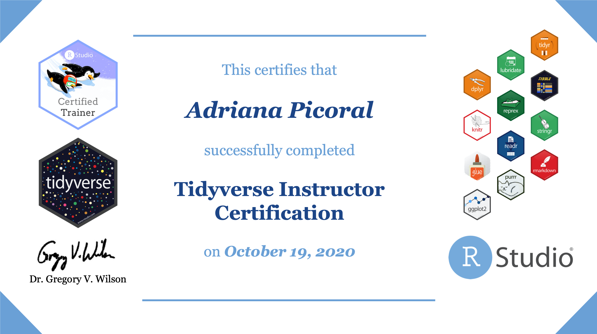

Adriana Picoral
I’m an assistant professor of data science at the University of Arizona’s School of Information. I’m also the founder of the Tucson chapter of R-Ladies.
My research interests include corpus linguistics, computational linguistics, and applied linguistics.

Course Materials
- ESOC 214 Introduction to Data Science
- ESOC 214 Fall 2020
- This course provides an introduction to the various skills and considerations required for data management and analysis in business, education, and science. Particular attention will be given to learning how to use the free and open-source computing environment R.
Workshops
- R-Ladies Tucson - Twitter Mining Workshop
- Twitter Data Mining in R
- R-Ladies Tucson Workshop held on September 26, 2020. In this 2-hour workshop, we go over the steps to search tweets using the Twitter API, annotated them with Spacy, and doing some basic collocation analysis.
- ResBaz Arizona Workshop
- ResBaz Arizona 2020 Intro to R
- This is a two part intro to R workshop. Part I introduces the basics of coding in R, including how to manipulate objects, use functions, and write if statements, for loops, and simple functions. Part II is based on the tidyverse package, and it covers how to load, inspect, and explore data in R. While learners at different expertise levels are welcome to attend, these workshops were designed for participants with no or little programming experience.
- LAEL PUC-SP Workshop
- LAEL Machine Learning Workshop
- This workshop was part of the LAEL Research Bazaar, a celebration of the golden jubilee of the Graduate Program in Applied Linguistics and Language Studies (LAEL), at the Pontifical Catholic University of São Paulo (PUCSP), Brazil.
Publications
- Picoral, A., Staples, S., & Reppen, R. (in press). Evaluation of annotation resources for learner data: A comparison of software tools. Special Issue of International Journal of Learner Corpus Research, Natural Language Processing for Learner Corpus Research.
- Picoral, A. (in press). Pens bleed, ink flows: Corpus-informed genre-based writing. In V. Viana (Ed.) New Ways in Teaching with Corpora. TESOL Press, Annapolis Junction, MD.
- Staples, R., Picoral, A., Novikov, A., & Sommer-Farias, B. (in press). Expanding research methods: Using existing corpora in the study of writing. In R. Manchón & C. Polio (Eds.) Handbook of Second Language Acquisition and Writing. Routledge Handbooks in Second Language Acquisition and Teaching.
- Picoral, A., Carvalho, A. (2020). The Acquisition of Preposition + Article Contractions in L3 Portuguese among Different L1-Speaking Learners: A Variationist Approach. Languages, 5, 45.
- Picoral, A. (2020). L3 Portuguese by Spanish-English Bilinguals: Copula Construction Use and Acquisition in Corpus Data. Doctoral Thesis, University of Arizona.
- Sommer-Farias, B., Carvalho, A., & Picoral, A. (2020). Portuguese Language Program Evaluation: Implementation, Results and Follow-up Strategies. Journal of the National Council of Less Commonly Taught Languages, 28, 1-50.